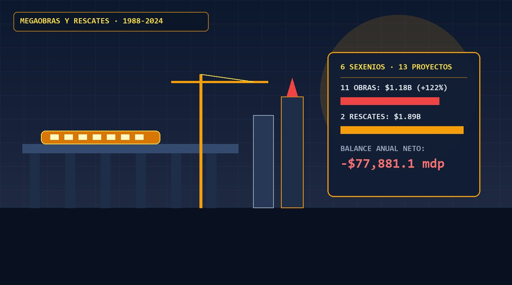
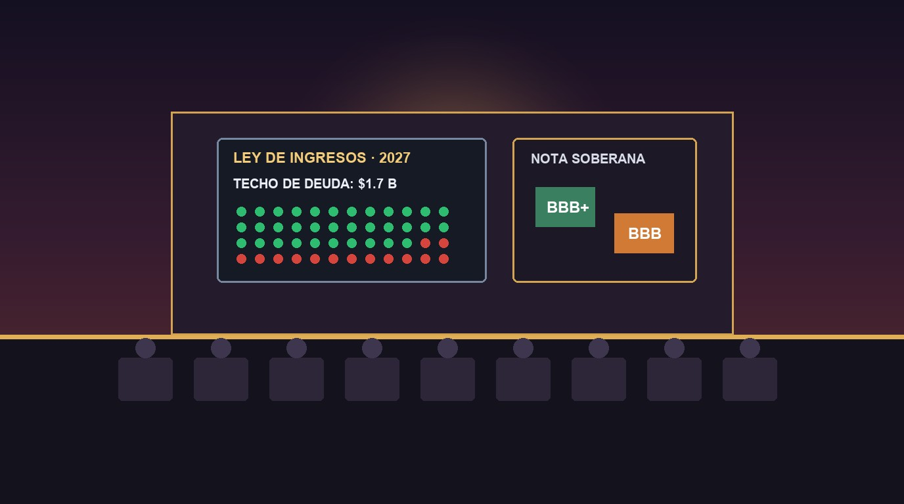
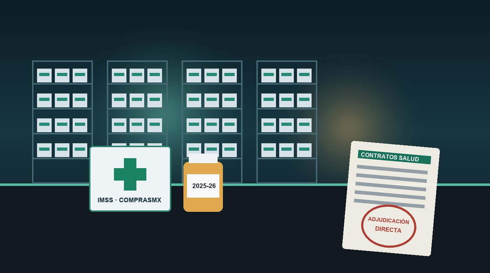

Expedientes de control interno
El archivero digital de la plataforma: aquí se arman y se guardan las grandes investigaciones, las nuestras y las que nos piden. Cada expediente junta el caso en cinco preguntas, su bitácora, sus dictámenes, lo que sigue y lo que falta. Se arman solos con la base de datos y se ponen al día cada día, sin esperar a una publicación.
Pregúntale al Auditor · Modo Inspector🗂️ Los expedientes
Toca uno para abrirlo. Los que tienen el registro más reciente en su bitácora van primero.
🏗️ Megaobras e infraestructura 15
 EXP-001Tren Maya¿Cuánto dinero del Tren Maya dejó la ASF por aclarar, y en qué tramos?🟠 Abierto: hay cosas por saber3 cifras · 15 documentos · 1 en bitácora · último registro: 1 de noviembre de 2026
EXP-001Tren Maya¿Cuánto dinero del Tren Maya dejó la ASF por aclarar, y en qué tramos?🟠 Abierto: hay cosas por saber3 cifras · 15 documentos · 1 en bitácora · último registro: 1 de noviembre de 2026 EXP-004Aeropuerto Internacional Felipe Ángeles (AIFA)¿Qué revisó la ASF en la construcción y la operación del AIFA?🟠 Abierto: hay cosas por saber4 cifras · 6 documentos · 1 en bitácora · último registro: 1 de noviembre de 2026
EXP-004Aeropuerto Internacional Felipe Ángeles (AIFA)¿Qué revisó la ASF en la construcción y la operación del AIFA?🟠 Abierto: hay cosas por saber4 cifras · 6 documentos · 1 en bitácora · último registro: 1 de noviembre de 2026 EXP-007Tren Interurbano México-Toluca «El Insurgente»¿Qué dejó por aclarar la ASF en la obra que faltaba para terminar el Tren Interurbano?🟠 Abierto: hay cosas por saber4 cifras · 11 documentos · 0 en bitácora
EXP-007Tren Interurbano México-Toluca «El Insurgente»¿Qué dejó por aclarar la ASF en la obra que faltaba para terminar el Tren Interurbano?🟠 Abierto: hay cosas por saber4 cifras · 11 documentos · 0 en bitácora EXP-008Megafarmacia del Bienestar (Huehuetoca)¿Cuánto costó el almacén de Huehuetoca y qué encontró la ASF en Birmex?🟠 Abierto: hay cosas por saber4 cifras · 2 documentos · 0 en bitácora
EXP-008Megafarmacia del Bienestar (Huehuetoca)¿Cuánto costó el almacén de Huehuetoca y qué encontró la ASF en Birmex?🟠 Abierto: hay cosas por saber4 cifras · 2 documentos · 0 en bitácora EXP-011Guaymas y la Gaceta Parlamentaria: el proyecto de gas y su revisión ambiental¿Qué consta en la Gaceta Parlamentaria y en documentos oficiales sobre el proyecto de gas en Guaymas y su impacto ambiental?🟠 Abierto: hay cosas por saber5 cifras · 4 documentos · 1 en bitácora
EXP-011Guaymas y la Gaceta Parlamentaria: el proyecto de gas y su revisión ambiental¿Qué consta en la Gaceta Parlamentaria y en documentos oficiales sobre el proyecto de gas en Guaymas y su impacto ambiental?🟠 Abierto: hay cosas por saber5 cifras · 4 documentos · 1 en bitácora
EXP-014Inversión en megaobras y rescates: 11 obras, 2 rescates y 6 sexenios¿Cuánto costaron las 11 megaobras y los 2 rescates de seis sexenios, cuánto pierden al año y dónde se consulta cada obra?🟠 Abierto: hay cosas por saber5 cifras · 4 documentos · 0 en bitácora EXP-015Plantas de fertilizantes Agronitrogenados¿Cuánto costó comprar y rehabilitar las plantas de Agronitrogenados en Pajaritos y qué observó la ASF?🟠 Abierto: hay cosas por saber5 cifras · 2 documentos · 1 en bitácoraEXP-016Compra de Grupo Fertinal¿Cuánto financió Pemex para comprar Grupo Fertinal y cuánto sigue perdiendo al año su filial de fertilizantes?🟢 Documentado5 cifras · 3 documentos · 0 en bitácoraEXP-017Estela de Luz (Bicentenario)¿Por qué la Estela de Luz costó más del triple de su contrato original y cuántos pagos improcedentes detectó la ASF?🟠 Abierto: hay cosas por saber5 cifras · 1 documentos · 0 en bitácora
EXP-015Plantas de fertilizantes Agronitrogenados¿Cuánto costó comprar y rehabilitar las plantas de Agronitrogenados en Pajaritos y qué observó la ASF?🟠 Abierto: hay cosas por saber5 cifras · 2 documentos · 1 en bitácoraEXP-016Compra de Grupo Fertinal¿Cuánto financió Pemex para comprar Grupo Fertinal y cuánto sigue perdiendo al año su filial de fertilizantes?🟢 Documentado5 cifras · 3 documentos · 0 en bitácoraEXP-017Estela de Luz (Bicentenario)¿Por qué la Estela de Luz costó más del triple de su contrato original y cuántos pagos improcedentes detectó la ASF?🟠 Abierto: hay cosas por saber5 cifras · 1 documentos · 0 en bitácora EXP-018El Búnker de Seguridad de García Luna (SSPC)¿Cuánto costó el edificio del Búnker de Seguridad en Constituyentes y por qué sigue pendiente el costo de sus sistemas?🟠 Abierto: hay cosas por saber5 cifras · 3 documentos · 0 en bitácora
EXP-018El Búnker de Seguridad de García Luna (SSPC)¿Cuánto costó el edificio del Búnker de Seguridad en Constituyentes y por qué sigue pendiente el costo de sus sistemas?🟠 Abierto: hay cosas por saber5 cifras · 3 documentos · 0 en bitácora EXP-019Refinería Bicentenario en Tula (Barda Perimetral)¿En qué se gastaron los $1,127.6 millones de la Refinería Bicentenario en Tula antes de cancelarse en 2014?🟢 Documentado5 cifras · 1 documentos · 0 en bitácoraEXP-020Programa Enciclomedia¿Cuánto ejerció la SEP en el programa Enciclomedia a lo largo de once años y qué revisó la ASF en siete Cuentas Públicas?🟢 Documentado5 cifras · 7 documentos · 0 en bitácoraEXP-021FOBAPROA / IPAB (Rescate Bancario de 1998)¿Cuánto se ha pagado con impuestos por el rescate bancario FOBAPROA-IPAB y cuánto se sigue debiendo al cierre de 2025?🟢 Documentado5 cifras · 5 documentos · 1 en bitácoraEXP-022FARAC (Rescate Carretero de 1997)¿Cuánto costó rescatar las 23 autopistas privadas del FARAC en 1997 y qué deuda sigue vigente hoy en el FONADIN?🟢 Documentado5 cifras · 4 documentos · 0 en bitácora
EXP-019Refinería Bicentenario en Tula (Barda Perimetral)¿En qué se gastaron los $1,127.6 millones de la Refinería Bicentenario en Tula antes de cancelarse en 2014?🟢 Documentado5 cifras · 1 documentos · 0 en bitácoraEXP-020Programa Enciclomedia¿Cuánto ejerció la SEP en el programa Enciclomedia a lo largo de once años y qué revisó la ASF en siete Cuentas Públicas?🟢 Documentado5 cifras · 7 documentos · 0 en bitácoraEXP-021FOBAPROA / IPAB (Rescate Bancario de 1998)¿Cuánto se ha pagado con impuestos por el rescate bancario FOBAPROA-IPAB y cuánto se sigue debiendo al cierre de 2025?🟢 Documentado5 cifras · 5 documentos · 1 en bitácoraEXP-022FARAC (Rescate Carretero de 1997)¿Cuánto costó rescatar las 23 autopistas privadas del FARAC en 1997 y qué deuda sigue vigente hoy en el FONADIN?🟢 Documentado5 cifras · 4 documentos · 0 en bitácora🗺️ Dinero para estados y municipios 2
 EXP-005Ramo 33: el dinero para estados y municipios¿Cuánto dinero del Ramo 33 llega a estados y municipios, y cuánto quedó por aclarar?🟠 Abierto: hay cosas por saber3 cifras · 3 documentos · 3 en bitácora · último registro: 2 de noviembre de 2026
EXP-005Ramo 33: el dinero para estados y municipios¿Cuánto dinero del Ramo 33 llega a estados y municipios, y cuánto quedó por aclarar?🟠 Abierto: hay cosas por saber3 cifras · 3 documentos · 3 en bitácora · último registro: 2 de noviembre de 2026 EXP-006Ciénega de Flores: el dinero público alrededor de LEGO¿Qué dinero público rodea a la planta de LEGO en Ciénega de Flores?🟢 Documentado3 cifras · 4 documentos · 0 en bitácora
EXP-006Ciénega de Flores: el dinero público alrededor de LEGO¿Qué dinero público rodea a la planta de LEGO en Ciénega de Flores?🟢 Documentado3 cifras · 4 documentos · 0 en bitácora💸 Deuda e ingresos del gobierno 3

EXP-013Diputados aprobó la deuda de 2027: Ley de Ingresos y nota soberana¿Cuánta deuda autorizó la Cámara de Diputados para 2027, qué cambió en las multas fiscales y qué dijo Hacienda sobre la nota BBB?🟠 Abierto: hay cosas por saber5 cifras · 8 documentos · 3 en bitácora · último registro: 18 de noviembre de 2026 EXP-009Huachicol fiscal: el impuesto que no entra¿Cuánto IEPS de gasolinas y diésel está en juego, y qué se sabe de lo que se evade?🟠 Abierto: hay cosas por saber3 cifras · 1 documentos · 2 en bitácora · último registro: 2 de noviembre de 2026
EXP-009Huachicol fiscal: el impuesto que no entra¿Cuánto IEPS de gasolinas y diésel está en juego, y qué se sabe de lo que se evade?🟠 Abierto: hay cosas por saber3 cifras · 1 documentos · 2 en bitácora · último registro: 2 de noviembre de 2026 EXP-003Los intereses de la deuda pública¿Cuánto cuesta al año pagar sólo los intereses de la deuda pública?🟠 Abierto: hay cosas por saber3 cifras · 1 documentos · 0 en bitácora
EXP-003Los intereses de la deuda pública¿Cuánto cuesta al año pagar sólo los intereses de la deuda pública?🟠 Abierto: hay cosas por saber3 cifras · 1 documentos · 0 en bitácora🔍 Contratos, salud y órganos autónomos 3
 EXP-010El INE: su presupuesto, lo auditado y los contratos en revisión¿Cuánto presupuesto maneja el INE, qué le observó la ASF y qué consta de los contratos bajo revisión?🟠 Abierto: hay cosas por saber4 cifras · 5 documentos · 3 en bitácora
EXP-010El INE: su presupuesto, lo auditado y los contratos en revisión¿Cuánto presupuesto maneja el INE, qué le observó la ASF y qué consta de los contratos bajo revisión?🟠 Abierto: hay cosas por saber4 cifras · 5 documentos · 3 en bitácora
EXP-012Compras de medicamentos y contratos del sector salud¿Cuánto contratan en medicinas e insumos el IMSS, IMSS-Bienestar y Birmex, y qué parte se da por adjudicación directa?🟠 Abierto: hay cosas por saber5 cifras · 3 documentos · 1 en bitácora EXP-023Seguro Popular: 53.5 millones de afiliados y lo que pasó después¿A cuántas personas llegó a cubrir el Seguro Popular, cuántas se quedaron sin acceso a la salud después y qué le observó la ASF?🟠 Abierto: hay cosas por saber7 cifras · 4 documentos · 1 en bitácora
EXP-023Seguro Popular: 53.5 millones de afiliados y lo que pasó después¿A cuántas personas llegó a cubrir el Seguro Popular, cuántas se quedaron sin acceso a la salud después y qué le observó la ASF?🟠 Abierto: hay cosas por saber7 cifras · 4 documentos · 1 en bitácora💼 Tu portafolio de investigaciones
Lo que guardaste en el Inspector de Servicios, junto a los expedientes.
Aún no guardas nada. En el Inspector de Servicios, revisa un RFC, un municipio o tus facturas y toca «💾 Guardar en mi portafolio de investigaciones». Se guarda solo en este navegador: nadie más lo ve.
🗃️ El archivero: cómo se construye un expediente
Las investigaciones propias y las que nos piden pasan por las mismas cuatro etapas.
- RecibidoLlegó la solicitud y se revisó que el caso se pueda sostener con documentos públicos.
- En cotejoSe buscan los documentos oficiales y se coteja cada afirmación contra ellos.
- En construcciónLas cifras cotejadas entran a la base, con su chip y su fuente, y el expediente se arma.
- PublicadoTiene su página, su bitácora y su sello; desde aquí se le da seguimiento solo.
📥 Pedidos, en construcción 0
Todavía no hay expedientes pedidos en construcción. Cuando aceptemos uno, aparecerá aquí con su etapa, sin decir quién lo pidió. Pide el tuyo.
✍️ Pide un expediente
También investigamos a pedido.
✍️ ¿Tu caso no está? Pídelo
Los expedientes también se abren a pedido. Hay dos caminos:
El expediente a la medida es un servicio de la plataforma y se cotiza; proponer un caso no cuesta. En los dos, la regla es la misma: solo documentos públicos, cada cifra con su fuente y nunca datos de personas privadas.
🔄 Seguimiento automático
Qué quiere decir que un expediente esté «al día».
🔄 Cómo se mantiene al día
- Se arma solo. Nadie lo escribe a mano: cada día, y cada vez que la plataforma publica, el expediente se vuelve a armar con lo que la base tiene de este caso. Si nada cambió en la base, queda igual, con el mismo folio.
- Se alimenta de la base. Las cifras, los documentos, las notas y los pendientes son los mismos de sus módulos: si cambian allá, cambian aquí.
- Vigila cada día. La Mesa de redacción junta titulares a diario; los de este caso salen abajo, sin verificar, como aviso de que hay algo por cotejar.
- Nada entra sin cotejo. Un titular nunca es fuente: una cifra entra al expediente solo cuando se coteja contra su documento oficial.
¿Lo necesitas aplicado a tu caso? Los servicios que se apoyan en esta Biblioteca.